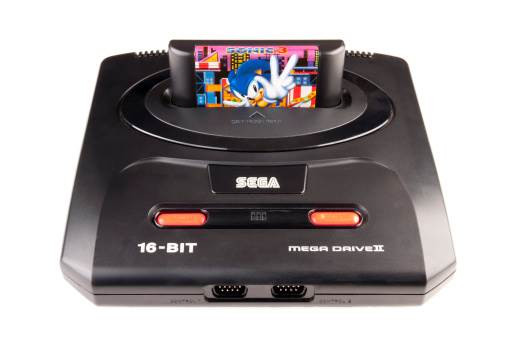
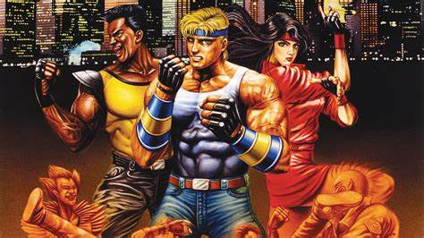
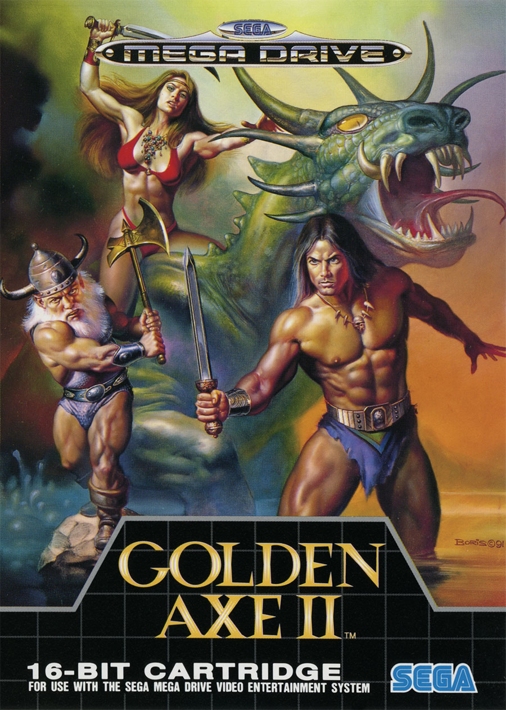

A Jornada dos consoles a Genesis do Mega Drive

O Mega Drive foi um console de videogame icônico da Sega que marcou os anos 90 com seus jogos de 16 bits e ainda é lembrado com saudade por muitos gamers. Também conhecido como Sega Genesis nos Estados Unidos, o Mega Drive foi lançado pela Sega em 1988, no Japão. Nos anos seguintes, o equipamento se consolidou no mercado e se tornou um dos mais populares da década de 90
- História e Popularidade:
O Mega Drive competiu diretamente com o Super Nintendo (SNES) da Nintendo e conquistou uma base de fãs leais. Seus gráficos avançados, trilha sonora marcante e uma biblioteca de jogos diversificada contribuíram para seu sucesso.
Títulos clássicos como “Sonic the Hedgehog”, “Streets of Rage”, “Golden Axe” e “Phantasy Star” são alguns dos jogos mais
lembrados do Mega Drive.
 |
 |
 |
-
Características Técnicas:
O console tinha um processador Motorola 68000 de 16 bits rodando a 7,67 MHz.
A capacidade de exibir até 64 cores simultaneamente e uma resolução de 320x224 pixels.
O áudio era gerado pelo chip Yamaha YM2612, proporcionando uma trilha sonora distintiva.
-
Acessórios e Versões:
O Mega Drive teve várias versões, incluindo o Mega Drive 2, que era menor e mais leve, e o Mega CD, um add-on que permitia jogos em CD.
A Tectoy, empresa brasileira, também lançou uma versão do Mega Drive no Brasil, que se tornou muito popular no país.
-
Legado:
O Mega Drive deixou uma marca duradoura na indústria de videogames e continua sendo um símbolo da era de ouro dos jogos eletrônicos.
video ilustrativo